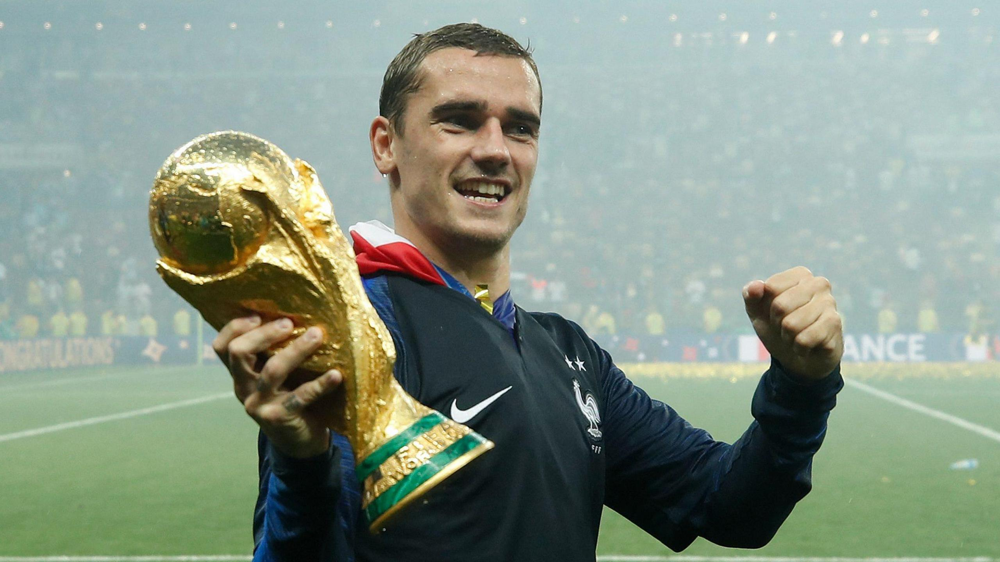

Accolades
 Griezmann’s career is defined by both team success and individual brilliance. His crowning achievement came in 2018 when he played a pivotal role in France’s World Cup victory, scoring in the final and earning the Bronze Ball as the tournament's third-best player. At the club level, he has won prestigious titles, including the UEFA Europa League and the UEFA Super Cup with Atlético Madrid. Individually, Griezmann has been recognized as the UEFA Euro 2016 Player of the Tournament and named La Liga’s Best Player in 2015–16. He has also been a consistent contender for the Ballon d’Or, finishing third in 2016 and 2018. These accolades underscore his status as one of the greatest players of his generation.